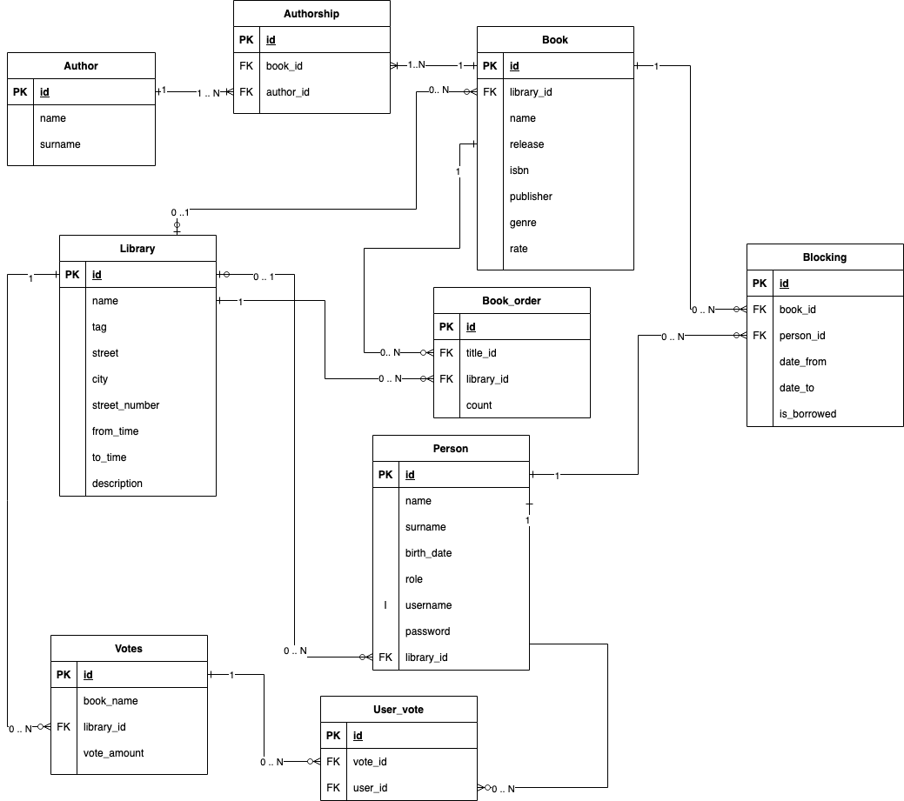

2. Knihovna: vyhledávání, rezervace, pùjèování a objednávání knih
- Autoøi
- Ondøej Babec
xbabec00@stud.fit.vutbr.cz -
popis èinnosti v týmu
- Tomá¹ Korbaø
xkorba02@stud.fit.vutbr.cz -
popis èinnosti v týmu
- Ladislav Dokoupil
xdokou14@stud.fit.vutbr.cz -
Tvorba a stylování HTML stránek
- URL aplikace
- http://37.205.11.180:9000/
U¾ivatelé systému pro testování
| Login | Heslo | Role |
|---|
| korbonaut | 12345678 | Administrátor |
| distributor | 12345678 | Distributor |
| libr | 12345678 | Knihovník |
| reader | 12345678 | Ètenáø |
Implementace
Informaèní systém knihovny Vyu¾ívá návrhového vzoru MVC.
Model je ulo¾en v Postgres databázi bì¾ící v oddìleném docker kontejneru.
Pohledy jsou vytvoøeny jako ThymeLeaf HTML ¹ablony a pøí po¾adavky jsou naplnìny daty kontrolerem.
Kontroler je implementován v Javì s vyu¾itím frameworku Spring.
- Kontrolery
- AuthorController - správa autorù knih distributory
- LibraryController - správá knihoven administrátorem
- OrderController - tvorba objednávek titulù knihovníky a jejich výøízení distributory
- TitleController - tvorba titulù distributory a jejich objednání knihovníky
- BookController - pøídání/správa knih vlastní knihovny pro knihovníky
- LoanController - manuální správá výpujèek knihovníkem
- RegisterController - registrace do systému
- UserController - správa u¾ivatelù a jejich oprávnìní administrátorem
- HomeController - vyhledáváni knih k objednání ètenáøi
- LoginController - autentizace do systému
- ReservationController - tvorba rezervací ètenáøi a jejich správá knihovníkem
- VoteController - hlasování k dokoupení knih ètenáøi a jejich odstranìní (po vyøízení) knihovníkem
- Security - definuje pøistupová práva rolí k daným stránkám/akcím
Databáze

Pou¾ítí
Prerekvizity:
- docker
- docker-compose
- java-11
- maven >=3.6
Konfigurace a instalace
Poèáteèní konfigurace databáze lze nastavit v souboru "/docker/db/db_dump.sql".
Následnì je IS vèetnì databáze spustìn skriptem "/docker/start_docker.sh -a".
Skript lze alternativnì spustit s parametrem "-d" pro bìh na pozadí.
Stejnojmenný skript s parametrem "-k" slou¾i k vypnutí aplikace a uvolnìní zdrojù disku.